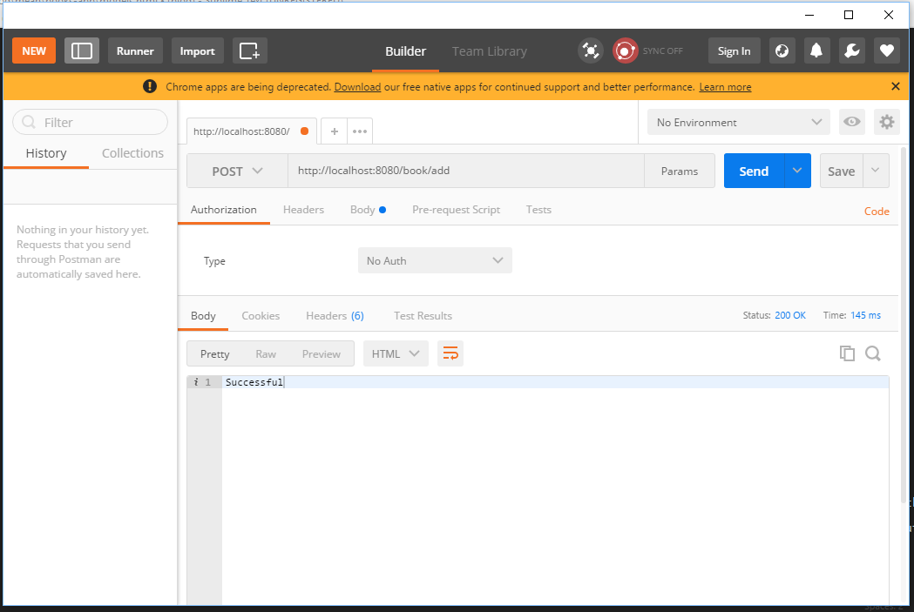
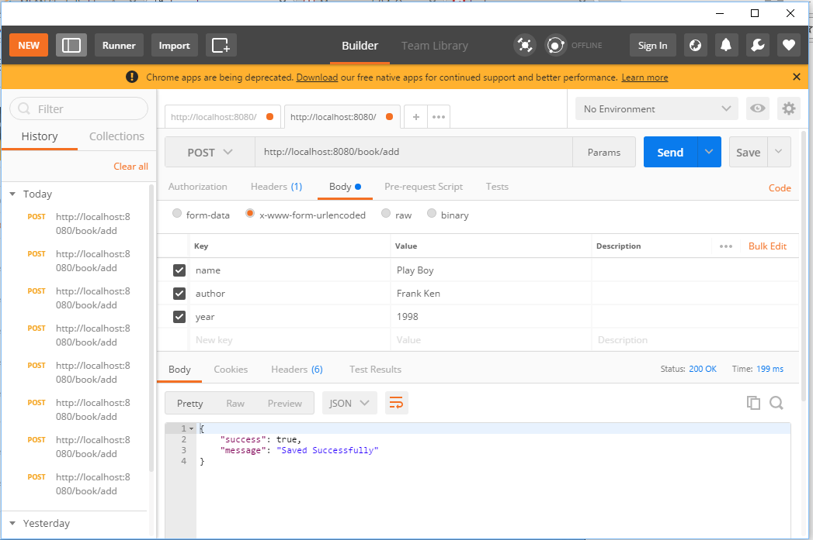

Mongodb Model
Recall that we have installed mongoose. This will help us to build the models or structure for our mongodb database tables. Create a new folder in the root directory (server side) named models
Create a file book.js in the models folder and add content below
Create another folder called routes in the backend to manage our APIs.
Create a file books.js in this routes folder and add
This is where we are going to build all our routes. Notice that we have one route: A post request to the add url which returns successful if everything works fine.
Modify the index.js to use this routes file.
We included the route file passing in the express router. Notice that we have also use a middleware on line 19 to control the request to the routes. So, all request to our books routes will have to include the /book uri.
To test our API, we can use a Google Extension called Postman. Run Postman, Select POST from the request type and enter the uri http://localhost:8080/book/add. Hit send. You should see successful in the output window.

We'll need body-parser to translate the request from the frontend to the backend. Run the command below to install it in the server side.
Use it in the index.js
Let us now build our route to save to the database. Edit the routes/books.js file to reflect the changes below
What we have done here is quite simple. We used the if statements to ensure that users enter the required values (name, author and year) before trying to save to the database. To save to the database, we create an instance of the Book model, pass it the values and called the save method.
We can test this out this API with Postman. In the body section, enter the key value pairs for name, author and year. Select POST request and enter the uri http://localhost:8080/book/add. Also select x-www-form-urlencoded option and hit send. You should get a success message.

Head over to the database UI (Robomongo), you will see the user saved in the database.